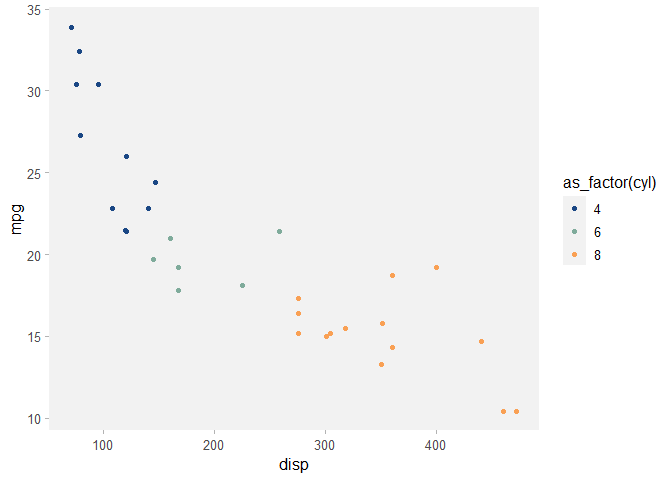

The goal of ideacolors is simple: to ensure that IDEA R&A graphics generated in R with ggplot2 conform to IDEA’s Brand Guidelines by providing themes and scales. It uses the palette defined in the Brand Guidelines document found on pages 21-22.
The point is to help us innovate on the content of our visualizations rather than the look and feel. Indeed, the latter is important in conveying analysis and insights in a familiar way, but it remains more sizzle than steak.
Installation
Since this is an internal package, you need to install the development version from GitHub with:
# install.packages("devtools")
devtools::install_github("idea-analytics/ideacolors")Examples
Here we can use scale_idea_colors and theme_idea_light
library(ideacolors)
library(tidyverse)
#> ── Attaching packages ─────────────────────────────────────── tidyverse 1.3.0 ──
#> ✓ ggplot2 3.3.3 ✓ purrr 0.3.4
#> ✓ tibble 3.1.0 ✓ dplyr 1.0.5
#> ✓ tidyr 1.1.3 ✓ stringr 1.4.0
#> ✓ readr 1.4.0 ✓ forcats 0.5.0
#> ── Conflicts ────────────────────────────────────────── tidyverse_conflicts() ──
#> x dplyr::filter() masks stats::filter()
#> x dplyr::lag() masks stats::lag()
p <- ggplot(mtcars, aes(x=disp, y=mpg)) +
geom_point(aes(color=as_factor(cyl))) +
scale_color_idea(palette = "div") +
theme_idea_light()
pAnd we can change it up with a qualitative color scale and theme_idea_min:
p +
scale_color_idea(palette = "qual") +
theme_idea_min()
#> Scale for 'colour' is already present. Adding another scale for 'colour',
#> which will replace the existing scale.
You’ll still need to render README.Rmd regularly, to keep README.md up-to-date. devtools::build_readme() is handy for this. You could also use GitHub Actions to re-render README.Rmd every time you push. An example workflow can be found here: https://github.com/r-lib/actions/tree/master/examples.
You can also embed plots, for example:

In that case, don’t forget to commit and push the resulting figure files, so they display on GitHub and CRAN.